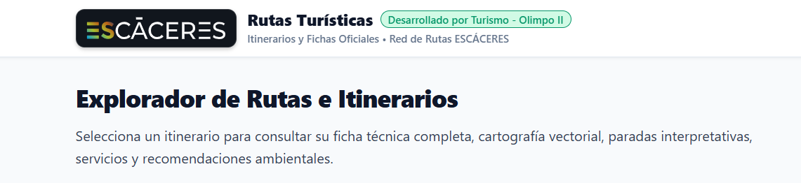

Jato 2026 — Análisis Gráfico ESCÁCERES
Presentación institucional interactiva y análisis de identidad visual, stands temáticos y propuesta gráfica para la I Feria Nacional del Folklore (#es+QTurismo).
Presentación institucional interactiva y análisis de identidad visual, stands temáticos y propuesta gráfica para la I Feria Nacional del Folklore (#es+QTurismo).

Modelo tridimensional interactivo GLTF de Cáceres con navegación orbital, hitos patrimoniales georreferenciados y visor documental.

Aplicación web responsiva con simulador de dispositivos (PC/Tablet/Móvil), modo oscuro OLED, cartografía y fichas técnicas oficiales.
Continuous ribbon form exploring natural daylight reflection across curved surfaces.
Modular timber and aluminum column array responding to harmonic wave intervals.
Lightweight structural lattice study in brushed steel and frosted acrylic.
Vertical kinetic column commissioned for an atrium gallery space.
Tall interactive centerpiece designed for narrow architectural alcoves.